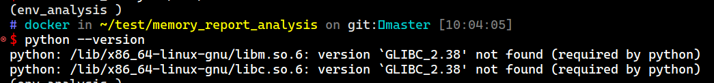

Before you ask question
Before you ask question
http://www.catb.org/~esr/faqs/smart-questions.html
title: Before you ask question date: 2025-03-11T09:46:48Z lastmod: 2025-03-11T09:46:48Z
Before you ask question
WSL docker 开发环境
WSL docker 开发环境
docker代理设置
在/etc/systemd/system/docker.service.d/proxy.conf中设置
[Service]
Environment="HTTP_PROXY=http://proxy.example.com:3128" Environment="HTTPS_PROXY=http://proxy.example.com:3128"
创建环境
docker run -it --name container_name --network host -v ~/:/host images
cabbaken is not in the sudoers file.
通过usermod将用户添加入sudoer组
usermod -aG sudo user_name
其通过修改/etc/sudoers将用户添 …
打包python环境离线运行
打包python环境离线运行
- 尝试venv打包
- venv中的activate文件中需要修改文件夹的路径
- bin文件中的python默认以软链接的方式链接到系统的python, 如果客户端环境没有对应版本的python, 会运行失败. 因此将python二进制文件复制到这个文件夹
- 尝试完成

因python版本需要的glibc环境不同失败 - 使用docker配置客户端对应版本的python环境再打包, 可以成功
使用venv打包python环境
- 可以先pip freeze保存当前包列表
- 替换venv/bin/python软链接
- 将venv文件夹复制到新环境, 修改venv/bin/activate中的变量
VIRTUAL_ENV